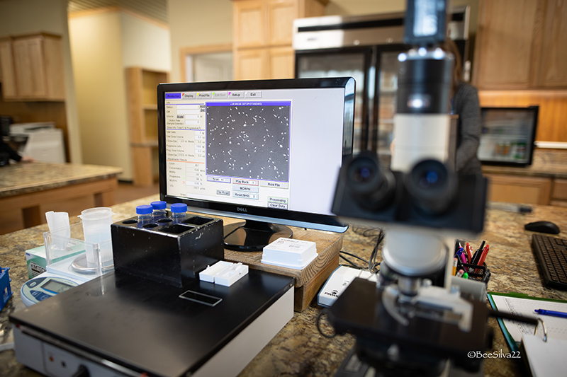

The status quo
Million-dollar workflows managed on paper.
You manage 20 to 40 mares across multiple ranches, on paper binders and Excel. One missed Lutalyse injection resets a $2,000 cycle. Embryo grades get scribbled on sticky notes.
When a client calls asking about their frozen inventory, you're digging through a drawer.

How Ovum fixes this
Every mare, every protocol, one screen.
Open the app at 6 AM. See every task sorted by priority, overdue first, grouped by ranch. Log a flush with IETS grading in 30 seconds.
Works offline in every dead-zone barn. No more paperwork at the end of the day.
